MARKET NEWSROOM
The reporting
behind the signals
A visual source ledger for the selected market, connecting original reporting with the current intelligence view.
LEAD REPORTING
Stories setting the frame
The opening stories in the current regional source set.
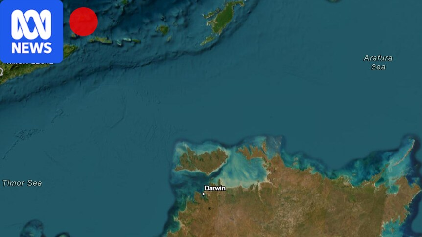
ABC News · 2026-11-21 12:04:52 UTC
Top End shaken as major quake hits East Timor
VIEW STORY ↗
ABC News · 2026-11-21 10:00:34 UTC
World record-breaking Australian swimmer Jon Henricks dies aged 91
VIEW STORY ↗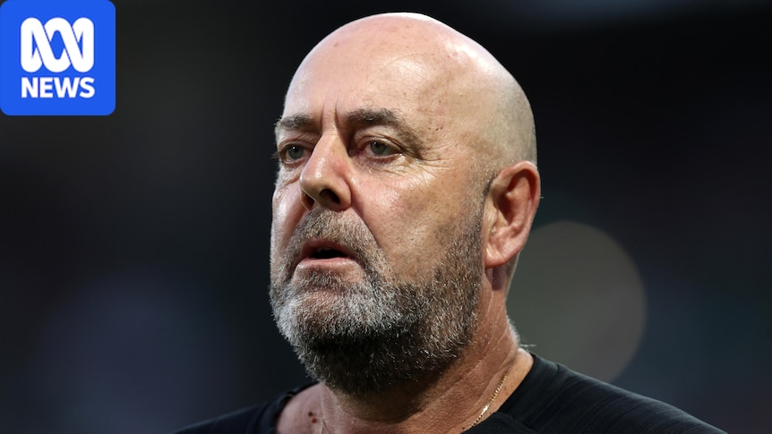
ABC News · 2026-11-21 08:03:56 UTC
Lehmann denies knowledge of sandpaper plot despite Bancroft statement
VIEW STORY ↗
ABC News · 2026-11-21 07:45:38 UTC
Eyre Peninsula residents worried about further blackouts
VIEW STORY ↗MORE HEADLINES
Follow the reporting
The remaining 54 stories in the current source order.
Headlines 005—016 12 stories
 005
005ABC News · 2026-11-21 06:46:52 UTC
↗Aussie bowlers no longer in control of public perception of legacies
 006
006ABC News · 2026-11-21 06:18:04 UTC
↗007Victoria Point woman waited seven hours for ambulance before death
ABC News · 2026-11-21 05:45:38 UTC
↗Man in hospital after stabbing in Melbourne's CBD
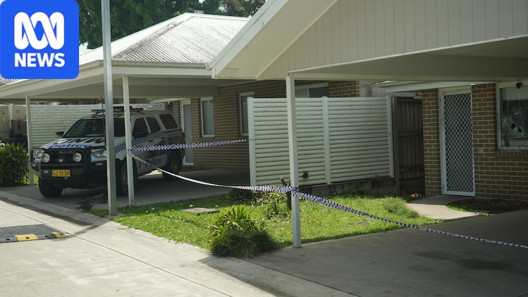
008ABC News · 2026-11-21 05:26:24 UTC
↗Teen critical after being shot by arrow
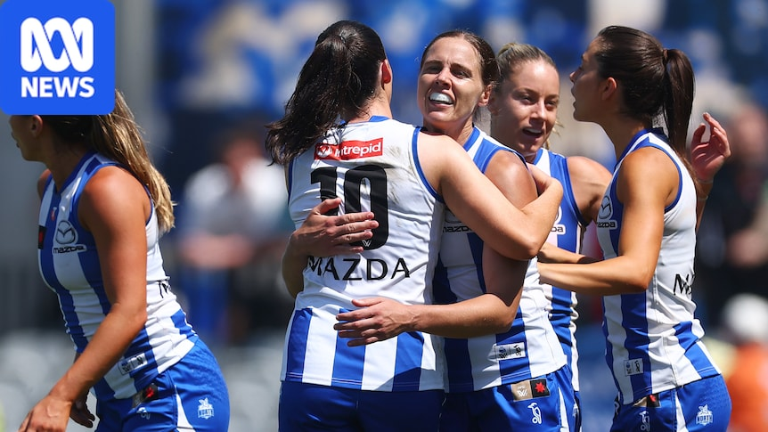
009ABC News · 2026-11-21 05:08:16 UTC
↗Roos head to fourth straight final after booking decider against Melbourne
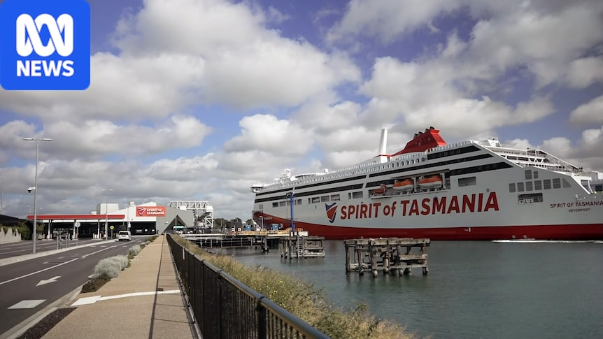
010ABC News · 2026-11-21 04:45:41 UTC
↗Spirit IV ferry docks late again after 'technical issue'
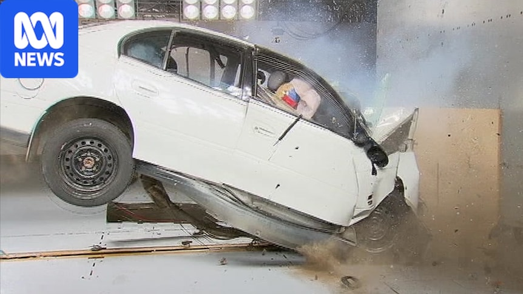
011ABC News · 2026-11-21 04:42:05 UTC
↗012Honda, Toyota recall 1.6 million US vehicles over airbag rupture risk
ABC News · 2026-11-21 04:25:18 UTC
↗013Labor set for historic defeat at Victorian election, political experts say
ABC News · 2026-11-21 03:39:43 UTC
↗Authorities investigating four-minute Triple Zero outage in Canberra
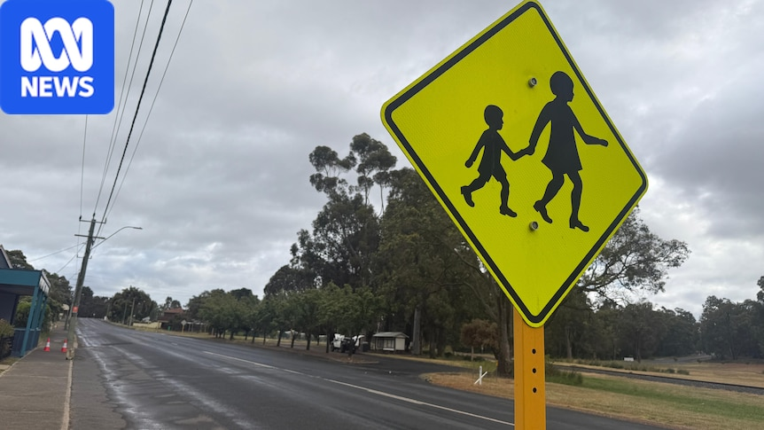
014ABC News · 2026-11-21 03:33:25 UTC
↗Boy, 11, killed after being hit by ute in regional WA
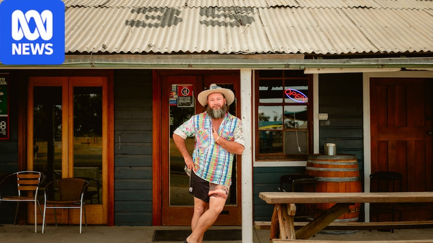
015ABC News · 2026-11-21 03:08:04 UTC
↗016The accidental outback publican
ABC News · 2026-11-21 03:04:37 UTC
↗Khawaja and Warner taken off commentary as CA backs Cummins' captaincy
Headlines 017—028 12 stories
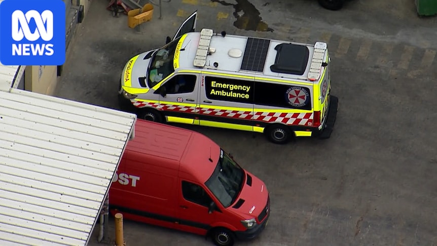
017ABC News · 2026-11-21 03:01:38 UTC
↗Teens 'lucky to be alive' after stabbings at Sydney shopping centre
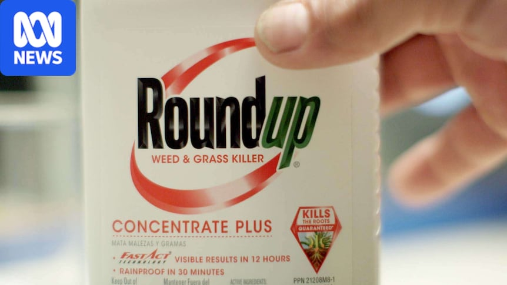
018ABC News · 2026-11-21 03:00:10 UTC
↗019Bayer to pay $11b over claims weed killer caused cancer
ABC News · 2026-11-21 02:23:29 UTC
↗020Four people struck by lightning at NSW music festival
ABC News · 2026-11-21 02:23:16 UTC
↗021Australia-wide rallies warn freebirths will soar under new rules
SMH Business · 2026-11-21 05:00:00+11:00
↗Hiring freeze, graduate cuts and offshoring: How AI is hitting the jobs market
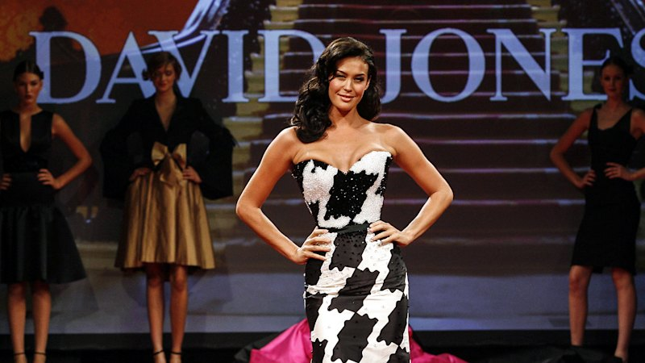
022SMH Business · 2026-11-21 05:00:00+11:00
↗023A new fight for survival begins at David Jones
SMH Business · 2026-11-21 05:00:00+11:00
↗024Artisanal fashion and Toorak timber: Inside Scarlet Jones’ new home
SMH Business · 2026-11-20 18:36:32+11:00
↗025Dateline taps Macquarie veteran to steer US mining push
SMH Business · 2026-11-20 17:56:03+11:00
↗026Nearly 1700 David Jones staff told to go as Myer poaches customers, suppliers
SMH Business · 2026-11-20 17:30:12+11:00
↗027Nadav got a fraction of the Anthropic shares he wanted. He’s still happy
SMH Business · 2026-11-20 17:12:38+11:00
↗Grim week wipes $169 billion from Australian sharemarket
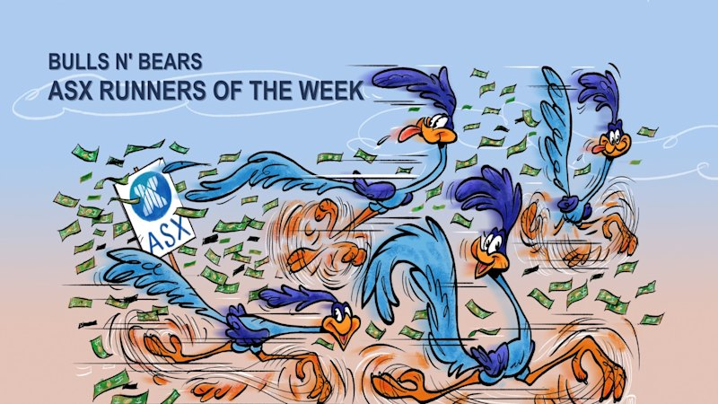
028SMH Business · 2026-11-20 17:07:02+11:00
↗ASX Runners of the Week: Black Rock, Mayne Pharma & Metal Hawk
Headlines 029—040 12 stories
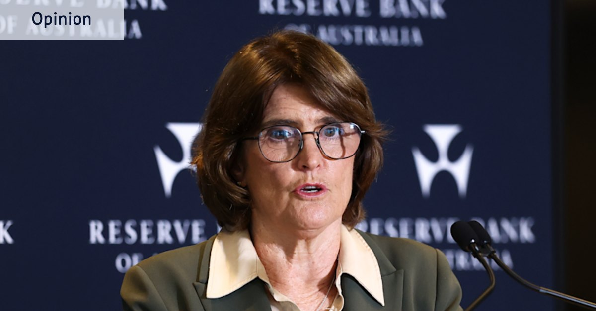
029SMH Business · 2026-11-20 16:52:32+11:00
↗Has the RBA gone too far?
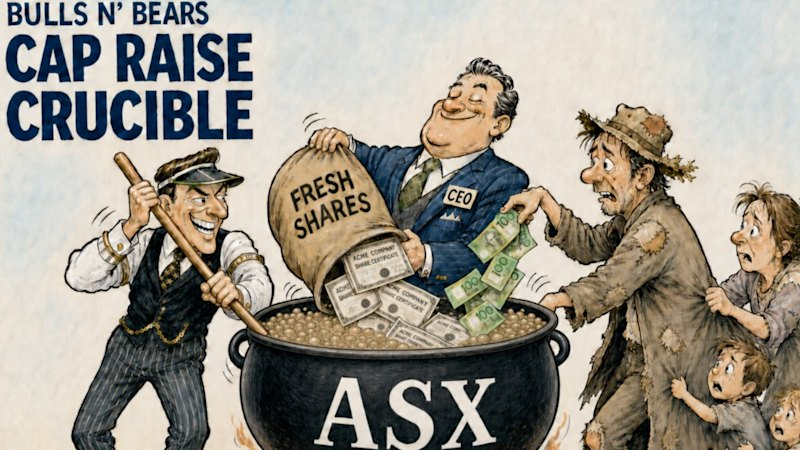
030SMH Business · 2026-11-20 16:45:08+11:00
↗031Cap Raise Crucible: Broker bonanza, gold and AI glory
SMH Business · 2026-11-20 14:10:33+11:00
↗Virgin in talks with Boeing, Airbus as it looks to order more planes
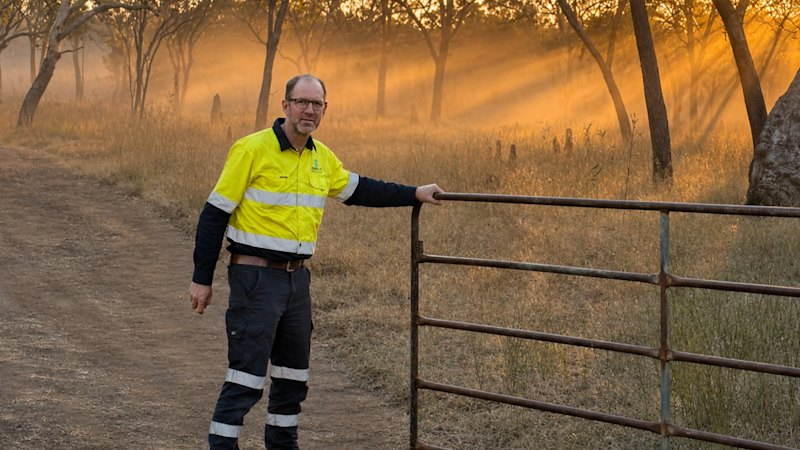
032SMH Business · 2026-11-20 14:03:40+11:00
↗Barkly cracks 98% rare earths recovery in Top End breakthrough
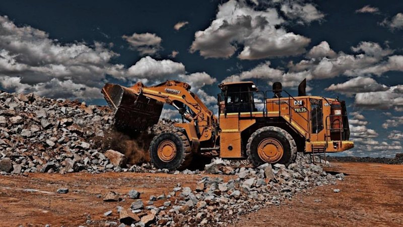
033SMH Business · 2026-11-20 13:30:10+11:00
↗Forrestania puts finishing touches on December WA gold restart
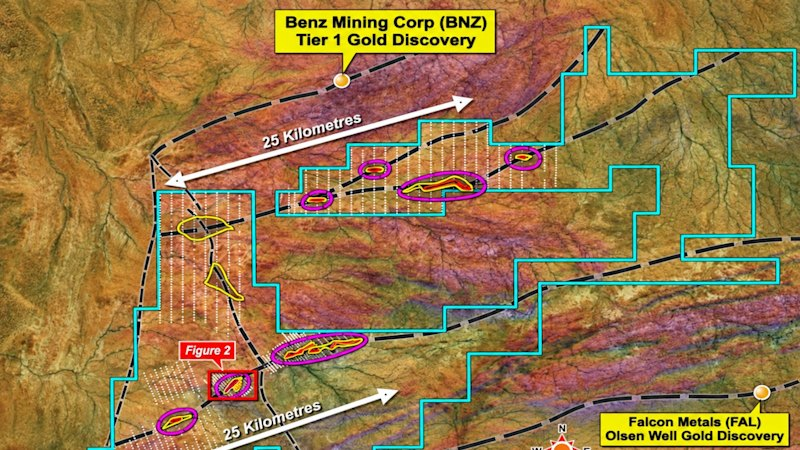
034SMH Business · 2026-11-20 13:02:30+11:00
↗035Gateway uncovers fresh gold clues near big WA Gascoyne find
SMH Business · 2026-11-20 11:03:01+11:00
↗036‘Pushing food around the plate’: How weight-loss drugs are changing what Australia eats
SMH Business · 2026-11-20 06:33:59+11:00
↗037Billionaire fashion tycoon was forcing son out of his company days before mysterious death, court hears
SMH Business · 2026-11-20 05:34:18+11:00
↗038‘It doesn’t get better than this’: Anthropic mints thousands of instant millionaires
SMH Business · 2026-11-20 05:30:00+11:00
↗039‘Conflict of interest’: KPMG on both sides of NAB’s underpayment scandal
SMH Business · 2026-11-20 05:06:00+11:00
↗040What can I do about my colleagues’ excessive use of emojis at work?
SMH Business · 2026-11-20 05:00:00+11:00
↗Is YouTube the future for the ABC?
Headlines 041—052 12 stories
041
The Guardian · 2026-11-19 03:32:42 UTC
↗042Australia may have ‘one foot in recession’ as unemployment surges to five-year high
The Guardian · 2026-11-18 14:00:04 UTC
↗In rare good news, wages have risen strongly. But Australian workers are still falling behind | Greg Jericho
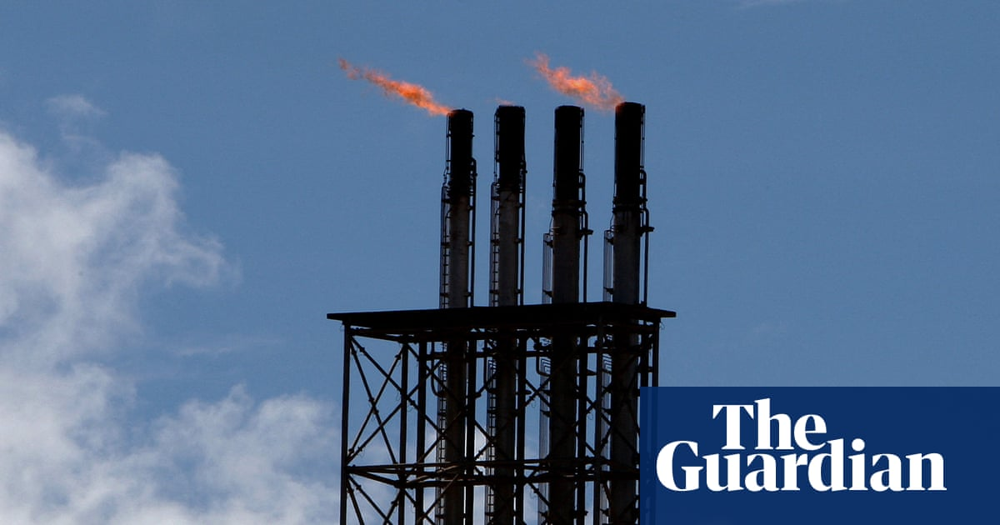
043The Guardian · 2026-11-18 14:00:02 UTC
↗044Business Council of Australia more aligned with fossil fuel industry than its members’ values, analysis finds
MacroBusiness · 2026-11-20 13:10:50 UTC
↗045The impact of five rate hikes on borrowing power
MacroBusiness · 2026-11-20 13:01:28 UTC
↗Weekend reading and MB media appearances
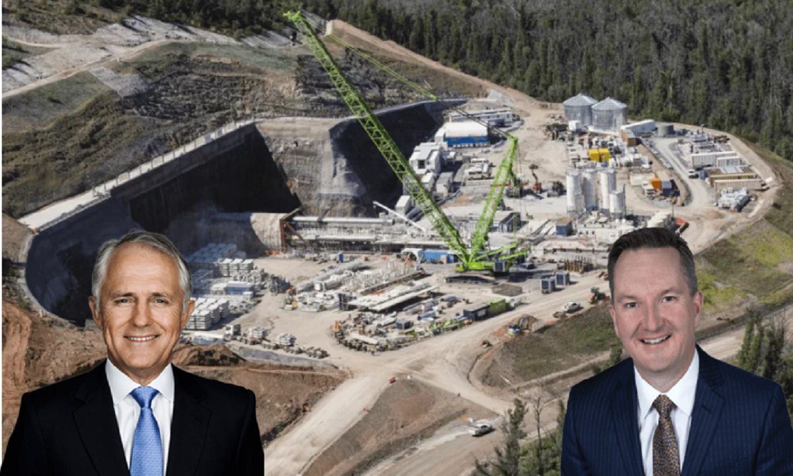
046MacroBusiness · 2026-11-20 01:00:58 UTC
↗047Abandon Snowy Hydro 2.0 before it’s too late
MacroBusiness · 2026-11-20 00:30:14 UTC
↗048Is the RBA or AI killing the jobs market?
MacroBusiness · 2026-11-20 00:00:24 UTC
↗049Sydney housing prices fall almost as fast as the Great Depression
MacroBusiness · 2026-11-19 23:30:32 UTC
↗050Was nobody else alive in 2000?
MacroBusiness · 2026-11-19 23:00:52 UTC
↗051Proof Victoria is an economic sinkhole
MacroBusiness · 2026-11-19 22:30:44 UTC
↗052Australian dollar arse end of the world
MacroBusiness · 2026-11-19 22:00:06 UTC
↗And now for biological weapons in Iran
Headlines 053—058 6 stories
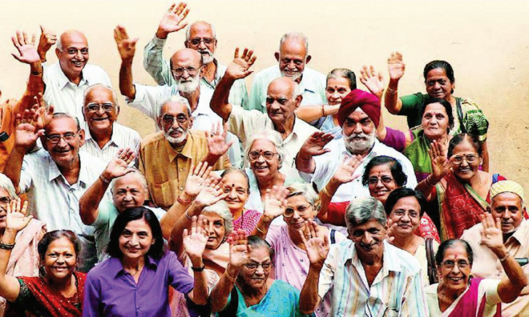
053MacroBusiness · 2026-11-19 21:00:52 UTC
↗054Labor ties itself in knots over elderly parent visas
MacroBusiness · 2026-11-19 13:10:02 UTC
↗Australia’s housing downturn worsens
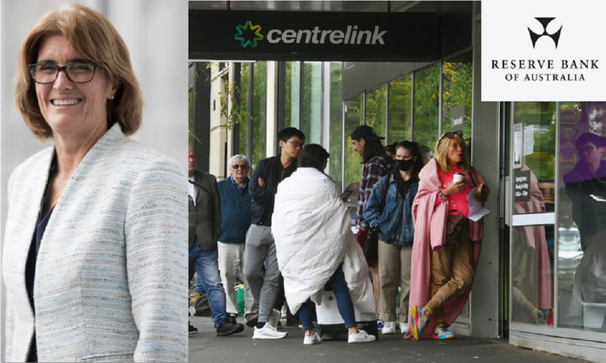
055MacroBusiness · 2026-11-19 01:18:41 UTC
↗056Economic shock builds as unemployment hits five year high
MacroBusiness · 2026-11-19 01:03:42 UTC
↗Labor market cracks, RBA done
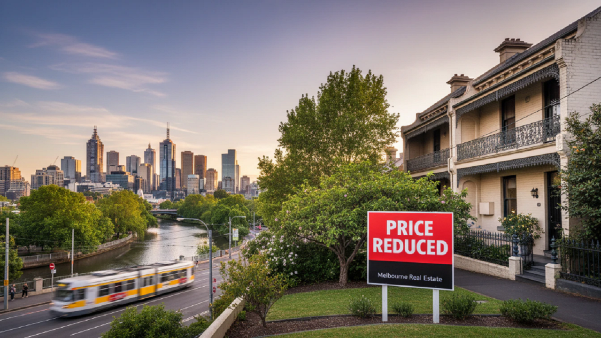
057MacroBusiness · 2026-11-19 01:00:40 UTC
↗Survey proves Victorians are housing irrational
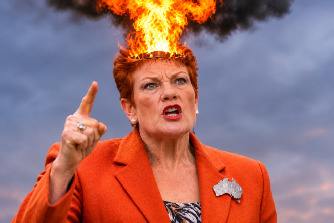
058MacroBusiness · 2026-11-19 00:30:39 UTC
↗